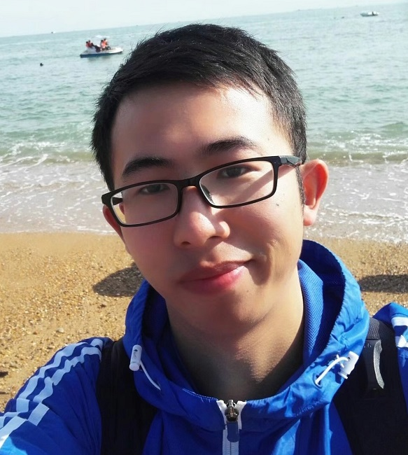
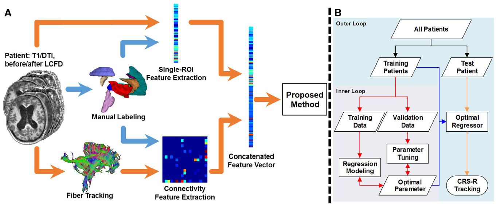
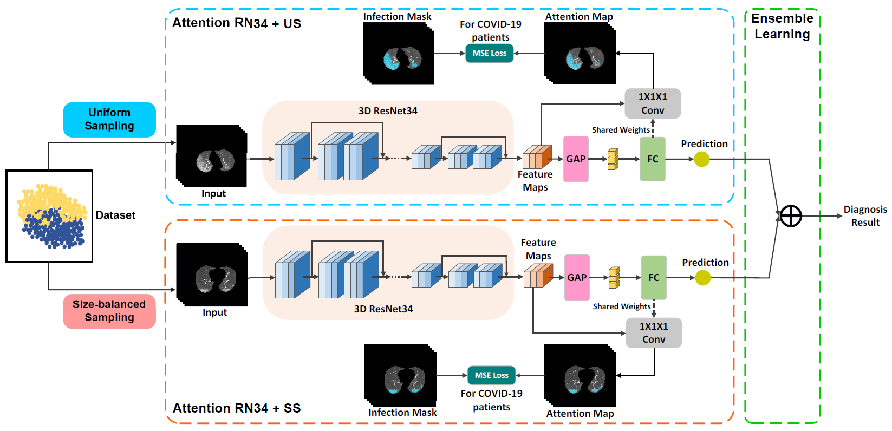
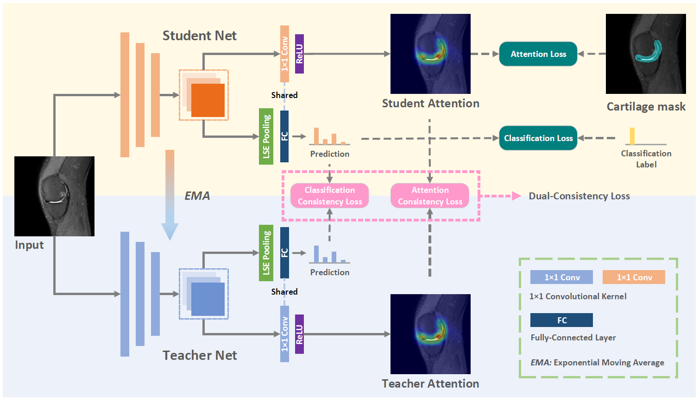
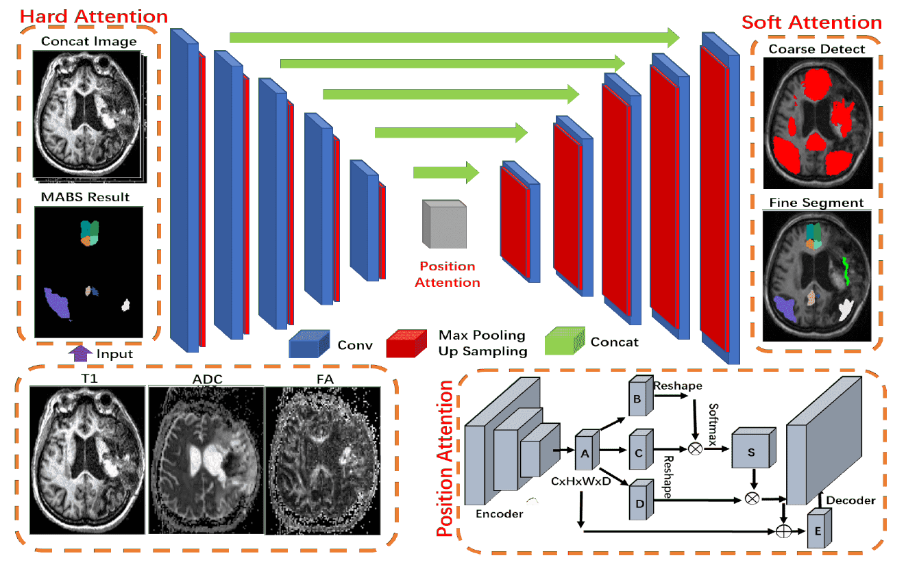
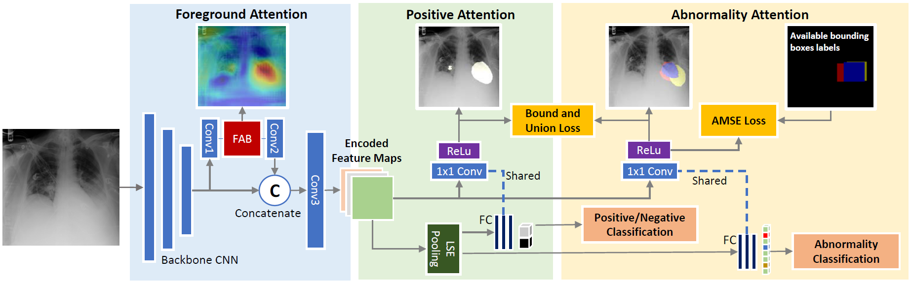
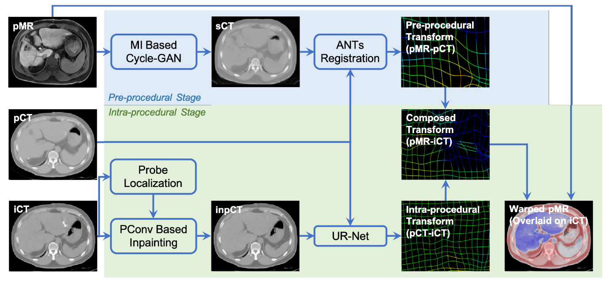
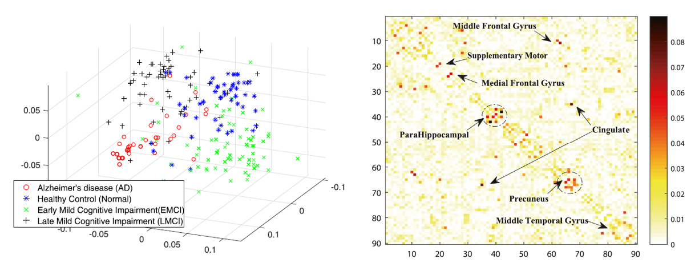

Jiayu Huo 霍加宇Ph.D Student
Department of Surgical & Interventional Engineering, |
 [Curriculum Vitae] |


Biography
I am a Ph.D. student in School of Biomedical Engineering & Imaging Sciences, King's College London (KCL), co-supervised by Dr. Rachel Sparks and Prof. Sebastien Ourselin. Previously, I received my M.Eng degree from School of Biomedical Engineering, Shanghai Jiao Tong University (SJTU) in 2021, under the supervison of Prof. Lichi Zhang and Prof. Qian Wang in the Medical Imaging Computing Lab. Before that, I spent three years in Shenyang, China and received my Bachelor degree from College of Medicine and Biological Information Engineering, Northeastern University (NEU). I worked with Prof. Yueyang Teng for undergraduate research.
My research interest lies on medical image analysis, computer vision and deep learning, especially on some semi-supervised and few-shot learning problems.
Selected Publications
|  | Neuroimage-Based Consciousness Evaluation of Patients with Secondary Doubtful Hydrocephalus Before and After Lumbar Drainage Jiayu Huo#, Zengxin Qi#, Sen Chen, Qian Wang, Xuehai Wu, Di Zang, Tanikawa Hiromi, Jiaxing Tan, Lichi Zhang, Weijun Tang, Dinggang Shen Neuroscience Bulletin, 2020. [paper] |
|  | Dual-Sampling Attention Network for Diagnosis of COVID-19 from Community Acquired Pneumonia Xi Ouyang#, Jiayu Huo#, Liming Xia, Fei Shan, Jun Liu, Zhanhao Mo, Fuhua Yan, Zhongxiang Ding, Qi Yang, Bin Song, Feng Shi, Huan Yuan, Ying Wei, Xiaohuan Cao, Yaozong Gao, Dijia Wu, Qian Wang, Dinggang Shen IEEE Transactions on Medical Imaging (IEEE TMI), 2020. [paper] |
|  | A Self-ensembling Framework for Semi-supervised Knee Cartilage Defects Assessment with Dual-Consistency Jiayu Huo, Liping Si, Xi Ouyang, Kai Xuan, Weiwu Yao, Zhong Xue, Qian Wang, Dinggang Shen, Lichi Zhang International Workshop on PRedictive Intelligence In MEdicine (PRIME), 2020. [paper] |
|  | Robust Brain Magnetic Resonance Image Segmentation for Hydrocephalus Patients: Hard and Soft Attention Xuhua Ren#, Jiayu Huo#, Kai Xuan, Dongming Wei, Lichi Zhang, Qian Wang International Symposium on Biomedical Imaging (ISBI), 2020. [paper] |
|  | Learning Hierarchical Attention for Weakly-supervised Chest X-Ray Abnormality Localization and Diagnosis Xi Ouyang, Srikrishna Karanam, Ziyan Wu, Terrence Chen, Jiayu Huo, Xiang Sean Zhou, Qian Wang, Jie-Zhi Cheng IEEE Transactions on Medical Imaging (IEEE TMI), 2020. [paper] |
|  | SLIR: Synthesis, localization, inpainting, and registration for image-guided thermal ablation of liver tumors Dongming Wei, Sahar Ahmad, Jiayu Huo, Pu Huang, Pew-Thian Yap, Zhong Xue, Jianqi Sun, Wentao Li, Dinggang Shen, Qian Wang Medical Image Analysis (MedIA), 2020. [paper] |
|  | Thermodynamic Edge Entropy in Alzheimer’s Disease Wang Jianjia, Jiayu Huo, Lichi Zhang Pattern Recognition Letters (PRL), 2019. [paper] |
Honors & Awards
| National Scholarship for Graduate Students, 2020 |
| Meritorious Winner, MCM/ICM, 2017 |
| Bronze Award, iGEM, 2017 |
| Excellent Undergraduate, Northeastern University, 2015-2016 |
Experiences
-
United Imaging Intelligence (UII), Shanghai, China.Oct. 2019 – Oct. 2020
Research Intern
Topic: Few-shot Learning and Semi-supervised Learning
Teaching
| 2020-2021 | Fall | TA in Artificial Intelligence and Medical Engineering |
| 2019-2020 | Spring | TA in Computer vision in Biomedical Engineering |
| 2018-2019 | Spring | TA in Data Structure |
© Jiayu Huo | Last updated: Oct. 06, 2021